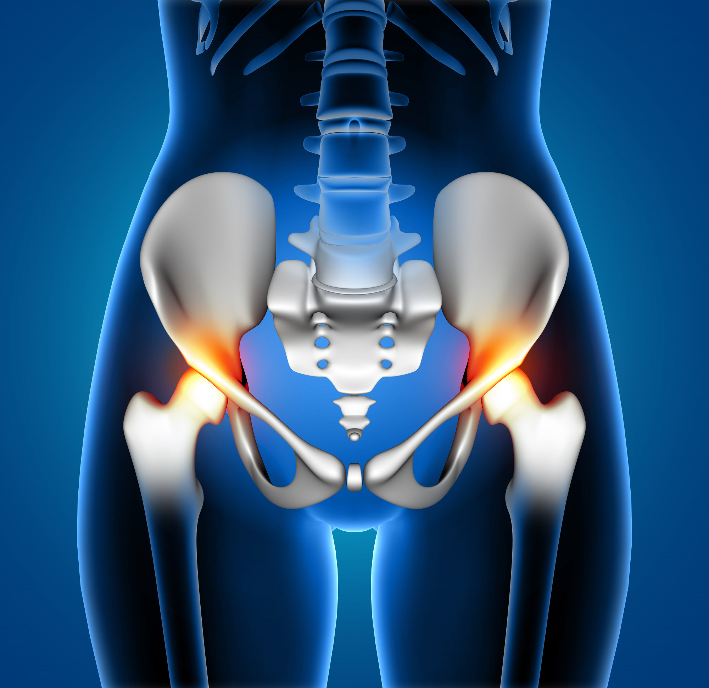

<article class="mb-5 px-4">
	<div class="container-fluid">
		<div class="row">
			<div class="col-md-6 mt-5">
				
			</div>
			<div class="col-md-6 mt-5">
				<h1 class="text-primary">TRATAMIENTO DE FISIOTERAPIA DEL SUELO PÉLVICO</h1>
				<p>La fisioterapia del suelo pélvico o la fisioterapia uroginecológica es una rama de la fisioterapia que tiene como objetivo poder valorar, tratar, mejorar y prevenir las alteraciones que puedan producirse en la zona del suelo pélvico.
				</p>
				<P>¿En qué disfunciones del suelo pélvico puede ayudar la fisioterapia del suelo pélvico?
				</P>
				<P>A continuación, enumeramos algunas disfunciones comunes entre la población y que con el correcto tratamiento podrían disminuirse e incluso eliminarse.</P>
                <p>En nuestra clínica contamos con un servicio de fisioterapia adaptado a las necesidades actuales, tanto en terapias consevadoras como avanzadas. Por ello ofrecemos un amplio abanico de posibilidades de tratamiento entre las que encontramos:</p>
                <ul>
					<li>Incontinencia urinaria</li>
					<li>Urgencia miccional</li>
					<li>Incontinencia fecal o de gases</li>
					<li>Descenso de órganos (prolapso)</li>
					<li>Dolor pélvico</li>
					<li>Estreñimiento</li>
					<li>Disfunciones sexuales (dispareunia, vaginismo…)</li>
					<li>Diástasis abdominal</li>
				</ul>
			</div>
		</div>
	</div>
</article>
